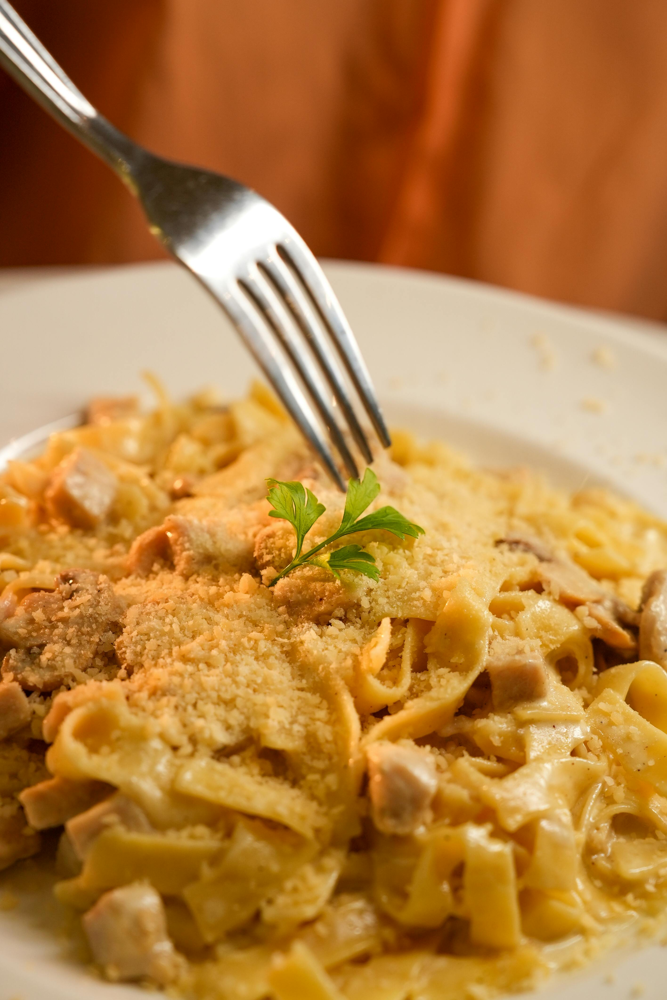

Chicken Fettucine

Ingredients
1/2 pound fettuccine
- 1 pound chicken breast, cut into bite-sized pieces
- 2 tablespoons Cajun spice, divided
- 2 smokey bacon and white Cheddar sausage, cut into 1/2-inch rounds
- 1/2 yellow bell pepper, diced
- 1/4 red onion, diced
- 1 tablespoon minced garlic
- kosher salt and freshly ground black pepper to taste
- 2 tablespoons avocado oil
- 1/2 cup pizza sauce
- 1 cup chicken broth
- chopped parsley for garnish
Instructions
- Fill a large pot with lightly salted water and bring to a boil. Cook fettuccine at a boil for about 7 minutes.
- Meanwhile, season chicken with 1 tablespoon Cajun spice; set aside. Mix the sausage, bell pepper, onion, garlic, salt, and pepper together in a bowl; set aside.
- Bring a large skillet or wok to medium-high heat. Add oil and let heat.
- Add chicken to the skillet first and cook, stirring for about 5 minutes. Add sausage mixture and cook, stirring for about 5 minutes.
- Pour in chicken stock, pizza sauce, and 1 tablespoon Cajun seasoning. Cook and stir until well combined. Add cooked fettuccine to the skillet, and toss it all together.
- Serve in large wide bowls or plates. Garnish with parsley.